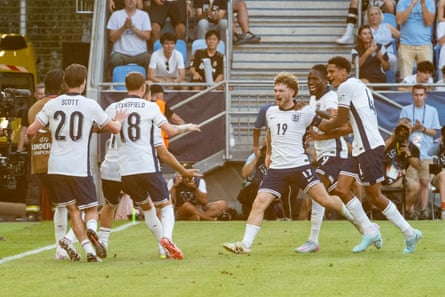
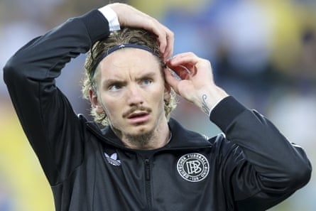

I t turns out that behind the quiet demeanour, Lee Carsley is much more confident than often comes across. After England Under-21s lost to Germany in their final group match of the European Championship last week – a result that meant both teams progressed to the quarter-finals – the manager sought out his opposite number, Antonio Di Salvo. “He said that they would see us in the final,” revealed the German.
Superb victories against a highly fancied Spain and the Netherlands mean Carsley has an opportunity for revenge, having inflicted Germany’s last defeat in this age group on England’s way to winning the title in Georgia two years ago. The trouble is that Germany have since gone 20 matches unbeaten and possess the tournament’s outstanding player so far, Nick Woltemade of Stuttgart.
He did not feature in the group match as Di Salvo made 11 changes and Carsley knows he must come up with a plan to nullify the giant Bayern Munich-bound striker if they are to beat Germany to winning a fourth title.
“It was a bit tongue-in-cheek,” Carsley said of his prediction. “I thought that we’d be there, I wasn’t sure if they would be there, but I was confident that we were going to do well in this tournament. I’ve got a lot of belief with this team. They’re so exciting to watch. They play without any inhibitions. Hopefully we can take that into tomorrow.”
The former Republic of Ireland midfielder remains in the dark about who will be playing him in Saipan, the new film about Roy Keane’s infamous bust-up with Mick McCarthy before the 2002 World Cup, Carsley having been wheeled out alongside Jason McAteer at the press conference the day after Keane had returned home.
Harvey Elliott (centre) celebrates with teammates after scoring what proved the winner against the Netherlands in the semi-final.Photograph: Jozef Jakubco/EPA
Hogging the limelight will never be Carsley’s style and the last three weeks have shown that his natural habitat is developing the brightest prospects. Whether that can translate to England’s senior side remains the big question after his six-match spell as interim manager. The Football Association has signed him up to take charge of the next under-21s tournament, in Albania and Serbia in 2027.
Most of this squad will not be eligible, but Carsley knows that another European title would do his prospects no harm, having made clear his ambition to one day take the senior job again. Thomas Tuchel, the incumbent, and his Germany counterpart and compatriot, Julian Nagelsmann, who is interrupting his holiday in Mallorca to attend, will be part of a sold-out crowd in Bratislava for Saturday’s final.
An awkward moment was skilfully manoeuvred by Carsley when a Slovakian journalist asked which team Tuchel would be supporting. “Well, I imagine he will support England with him being the England head coach,” he responded.
England’s captain, James McAtee, who is expected to leave Manchester City this summer, acknowledged it will be big chance for the players to shine. “I think it will be extra motivation for the lads to win,” said McAtee, who was gushing when asked about Carsley’s influence. “I think the biggest thing about working with Lee is the belief and the trust that he puts in you. On the pitch he just fills you with confidence. You know that you can go and play with freedom.”
England’s players have been allowed to explore the Slovakian capital during their free time this week and Carsley will hope they have recovered sufficiently from five games in the past fortnight. It will be the third time England have faced German opposition in the final of the European Under-21 Championship , having beaten West Germany to win their first title in 1982 under Dave Sexton, who won it again two years later, then been thumped 4-0 in 2009 under Stuart Pearce by a team featuring Manuel Neuer, Mats Hummels, Sami Khedira and Mesut Özil.
Germany’s Nick Woltemade has been the star player of the tournament.Photograph: Marco Steinbrenner/DeFodi Images/Shutterstock
Those four were at the 2010 World Cup in South Africa a year later as Germany thrashed Fabio Capello’s England side – coincidentally 15 years to the day before Saturday’s final – but it is not always a guarantee of future success: none of the Germany team that triumphed in 2017 after beating England in the semi-finals on penalties in Poland have reached the same level.
Yet with the new Liverpool signing Florian Wirtz having inspired Germany’s third victory in 2021 and several members of the England squad from 2023 such as Cole Palmer and Levi Colwill established with the seniors, it is clear the tournament can act as a springboard. “It’s making sure that we keep producing players and teams that are capable of playing in these games in the last stages, because I think long term that will help the seniors,” said Carsley.
Woltemade’s move to Bayern, where he is viewed as a potential successor to the England captain, Harry Kane, was reportedly sealed after he impressed the manager, Vincent Kompany, on a video conference call this week. The 23-year-old would not entertain questions about that but made clear he is determined to finish the job. Germany, who will be without the Freiburg defender Max Rosenfelder owing to a calf injury, having reached a fourth final in the past five editions.
“Of course there’s things swirling around but my only focus is the final,” said Woltemade. “This the only time in my life I can win the under-21 title so I want to make sure we do it.”